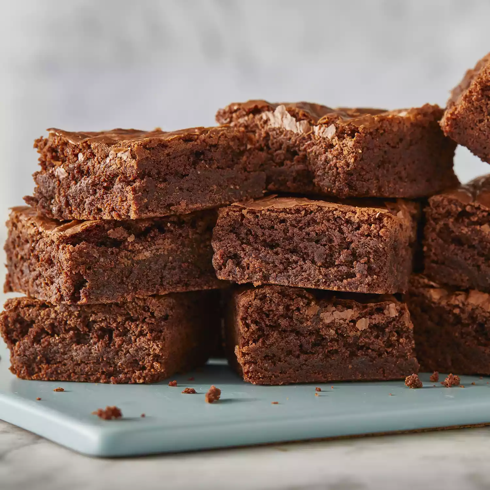

No Bake Cookie Recipe

Description
Tasty no-bake cookies made with quick-cooking oats, peanut butter, and cocoa.
For best results, start timing when the mixture reaches a full rolling boil; this is the trick to successful cookies.
If you boil too long the cookies will be dry and crumbly.
If you don't boil long enough the cookies won't form properly.
Ingredients
- 1 3/4 cups white sugar
- 1/2 cup butter
- 1/2 cup of milk
- 4 tablespoons unsweetened cocoa powder
- 1/2 cup crunchy peanut butter
- 3 cups quick-cooking oats
\
- 1 teaspoon vanilla extract
- waxed paper
Steps
-
Combine sugar, butter, milk, and cocoa in a medium saucepan; bring to a boil, stirring often.
Boil for exactly 1 1/2 minutes.
Remove from heat, and stir in peanut butter.
Add oats and vanilla; stir until well combined.
-
Drop by teaspoonfuls onto waxed paper. Let cool until hardened.